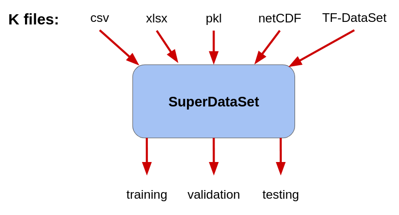
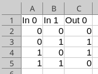
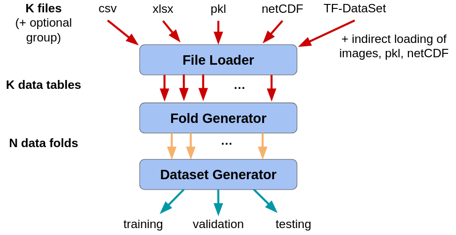

SuperDataSet
SuperDataSet is responsible for loading your data and configuring it for a training/evaluation experiment. We support a range of file formats and configuration options.

Data Sets
A data set for machine learning is composed of a set of examples. Often, a single example is composed of an input/desired output pair, meaning that for a given numerical input, the ideal model will produce the desired output. For any machine learning experiment, it is important to distinguish between several different data set types:
-
Training data sets are used to adjust the parameters of a model. In the deep network context, these parameters are adjusted incrementally to gradually reduce the prediction errors made by the model on the training data set.
- Validation data sets are independent of the training set and are used to:
- Evaluate the performance of a model at each training step. This information is often used to detech when training is complete.
- Compare the model to itself under different choices of hyper-parameter sets.
- Test data sets are independent of both the training and validation data sets, and act as a simulation of possible future data sets. As such, a test data set is used only for the final evaluation of a model after hyper-parameter choices are made.
Stochastic Nature of Machine Learning Training and Evaluation
The training of machine-learned models is a stochastic process due to a range of factors, including:
- the selection of the data used for training, validatin, and testing,
- the initial choices for the model parameters (which are randomly selected), and
- random factors during the training process (e.g., random assignment of examples to training batches, or Dropout).
The consequence of these random processes is that when we train a model multiple times (even when we think the conditions are the same), the performance of the model (e.g., accuracy) can vary to some degree. Using statistical language, we say that the performance is a random variable. In practice, this means that training and evaluating a model cannot be done just once - if we want to show that a model is doing its job and doing it well, then we must show that it does so consistently under different training and evaluation conditions.
SuperDataSet provides support for a range of different ways of constructing data sets, depending on what your goals are - all the way from only using a training set for a quick, informal exaperiment, to assembling multiple training, validation, and testing data sets to be used for formal evalution, including Cross-Validation.
Examples
How the data are loaded into memory and organized into training, validation, and testing sets is defined by a data configuration file. Below are several example use cases for these configuration files.
Data Set Files
Data sets can be represented using a variety of file formats. One common tabular format is the Comma Separated Values (CSV) file.
In any tabular format, rows are individual examples and different columns can contain either input features or desired output values.
For the Exclusive OR Problem, we have a total of four different input/output examples.
Example file: xor_data.csv
File content:

This particular file represents two different inputs, called “In 0” and “In 1” (the internal spaces are okay to use), and one desired output: “Out 0”. Note that in general, tabular files may represent any number of input features and desired outputs.
Training Data Set Only
The following data set specification file for the XOR problem specifies:
- The file format is tabular
- The name of the input data file (xor_data.csv)
- That the one input file should used as just as a training data set
- The list of columns to be used as input features
- The list of columns to be used as corresponding desired outputs
--data_format=tabular
--data_file=xor_data.csv
--data_set_type=fixed
--data_inputs
In 0
In 1
--data_outputs
Out 0
Notes:
- The specified input and output names must match those in the CSV file.
- Do not include extra spaces in the configuration file.
Training, Validation, and Testing Data Sets from Multiple Files
Multiple input files may be used. When there are three files and data_set_type is fixed, then data_A is used as training data, data_B is used as validation data, and data_C is used as testing data.
--data_format=tabular
--data_files
data_A.csv
data_B.csv
data_C.csv
--data_set_type=fixed
--data_inputs
In0
In1
--data_outputs
Out0
Out2
Out3
Data File Grouping
Files can be grouped together for the purposes of assigning training, validation, and testing data sets. In this case, the examples from data_A and data_B are merged into group 0 and then assigned to the training set. The examples from data_C are assigned to the validation data set. No data are assigned to the testing dataset.
--data_format=tabular
--data_split=by-group
--data_files
data_A.csv,0
data_B.csv,0
data_C.csv,1
--data_set_type=fixed
--data_inputs
In0
In1
--data_outputs
Out0
Out2
Out3
Random Split
The examples contained within the set of files can also be randomly assigned to the training, validation, and testing data sets. With data_split set to random, the examples are first merged into a single table and then split into three folds. The first fold is assigned to the training set, the second to the validation set, and the third to the testing set.
--data_format=tabular
--data_split=random
--n_folds=3
--data_files
data_A.csv
data_B.csv
data_C.csv
--data_set_type=fixed
--data_inputs
In0
In1
--data_outputs
Out0
Out2
Out3
Holistic Cross-Validation
N-fold Cross-Validation is about creating N different models with different subsets of data used as training, validation, and testing data sets. In this example, the data from the three files are randomly split into 10 differnt groups (called folds). Eight of these folds are assigned to the training set, and one each is assigned to the validation and testing sets. The exact assigment is determined by the rotation argument.
--data_format=tabular
--data_split=random
--n_folds=10
--data_files
data_A.csv
data_B.csv
data_C.csv
--data_set_type=holistic-cross-validation
--data_inputs
In0
In1
--data_outputs
Out0
Out2
Out3
--rotation=3
From Data Files to Data Sets
The translation from a set of files to the training/validation/testing data sets is handled as a multi-step process, with two intermediate representations: data tables and data folds. Both intermedidate representations include all of the input/desired output examples, but serve different purposes in the model training process.

The translation process is as follows:
-
File Loader: Each data file is loaded into a single data table. Each table consists of multiple input/desired output examples.
a. Optional: each data table may be tagged as belong to a specific fold.
b. Optional: each example within a table may be tagged as belonging to a specific fold.
-
Fold Generator: the examples contained within the data tables are sorted into one or more data folds.
a. By default, one data table is assigned to one fold.
b. The examples may also be sorted by how they are tagged.
-
Dataset Generator: Assembles training/validation/testing data sets by combining discrete data folds. Specifically:
a. The training set is one or more folds
b. The validation set is zero or one fold
c. The testing set is zero or one fold
d. The exact assignment is determined by several different data set options.
Internal Representation
Internally, data tables, data folds, and training/validation/testing data sets are represented internally in one of two ways:
- Numpy Arrays (default) are appropriate for small data sets that can be contained entirely within the available RAM. This representation offers the most flexibility in how data are handled.
--data_representation=numpy
- Tensorflow Datasets represent data sets as data processing pipelines. These are most appropriate for large data sets, especially those that are expensive to load from disk. This option allows for training of models to begin before all data are loaded from disk, and allow caching of data to high-speed storage.
--data_representation=tf-dataset
Loading Data Files
Data can be loaded from a set of different files. However, all files in the set must be of the same Data File Format.
Data Loading Arguments
Location of the set of data files:
--data_set_directory=PATH
where PATH is a relative or absolute path to the set of data files (default is the local directory).
File name(s) can be specified as follows:
Single File
--data_file=YYY
where YYY is the name of a file relative to the data_set_directory
Multiple Files
--data_files
YYY0
YYY1
YYY2
:
where YYY0, YYY1, … is a list of file names.
Multiple Files with Fold Assignment
--data_files
YYY0,F0
YYY1,F1
YYY2,F2
:
where YYY0, YYY1, … is a list of file names, and F0, F1, … are the integer fold numbers that each file will be assigned to.
Selecting Fields from Files
Fields are individual columns in a tabular file or a key name in a pickle file. Four different field types can be extracted from a file.
- Model inputs can consist of one or more fields:
--data_inputs FIELD0 FIELD1 FIELD2 :where FIELDx is a string that refers to the name of a field in the file.
- Model desired outputs can consist of one or more fields:
--data_outputs FIELD0 FIELD1 FIELD2 : - Example weights (float). Each example in a dataset can be weighted for the purposes of computing the loss function. In unbalanced data sets, the common cases can dominate the loss, resulting in a model that essentialy ignores the rare cases. When using weights, the rare cases should be assigned a weight of 1, and the common cases should be assigned a low weight (e.g., the ratio of rare to common).
--data_weights=FIELDwhere FIELD is the string name of the field that contains the weights.
- FUTURE Fold assignment (int: 0 … n_folds-1). An individual example can be assigned to a specific fold.
--data_folds=FIELDwhere FIELD is the string name of the field that contains the fold numbers.
Data Translation
Data Translation allows for the automatic translation of input/output columns into a ML-ready representation. These translation methods are only supported for tabular files.
We currently support two forms of Data Translation:
- Enumerated data types: automatic translation from a string value to a a natural number (non-negative integer value)
- One-hot encoding: translation of an integer value into a binary vector containing all zeros except for one ‘1’)
Data Tables to Folds
Once each file is loaded into its data table, its examples are sorted into a set of data folds. There are several different ways that sorting can be done:
- Identity: the data tables are assigned in order to folds (i.e., table 0 -> fold 0, table 1 -> fold 1, …)
--data_fold_split=identity
- Group-by-File: the user explicitly assigns a data table to a fold in the data_files list. If multiple data tables are assigned to a single fold, they are merged. Note: there cannot be a fold i that contains no examples if some fold j > i contains examples.
--data_fold_split=group-by-file - FUTURE Group-by-Example: the user explicitly assigns individual examples to specific folds using –data_folds
--data_fold_split=group-by-example - Random: the examples from all data tables are randomly assigned to the folds.
--data_fold_split=random --n_folds=NNNwhere NNN is the total number of folds.
- FUTURE Random-Stratify: the examples from all data tables are randomly assigned to the folds. This random assignment respects the distribution of the stratification field
--data_fold_split=random --n_folds=NNN --data_stratify=FIELDwhere NNN is the total number of folds and FIELD is the field that specifies the stratification class.
Folds to Data Sets
Folds are assembled into training, validation, and testing data sets in one of several ways:
- Fixed (default)
- Fold 0 is assigned to the training data set
- Fold 1 (if it exists) is assigned to the validation data set
- Fold 2 (if it exists) is assigned to the testing data set
- An error will be raised if there are more than three folds
--data_set_type=fixed
- Holistic-Cross-Validation: for N folds, N-2 folds are merged to form the training set
--data_set_type=holistic-cross-validation
--rotation=RRR
where RRR is the rotation number (0 … N-1). Typically, this argument is specified at the command line and not in a configuration file.
-
Hold-Out-Cross-Validation
-
FUTURE Orthogonalized-Cross-Validation